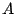
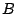
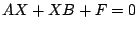
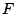
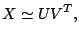
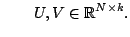
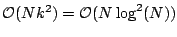
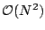

Next: About this document ...
Multigrid for large scale time-dependent Sylvester equations
Bart Vandereycken
Katholieke Universiteit Leuven, Computer Science Department
Celestijnenlaan 200A, B-3001 Leuven, Belgium
bart.vandereycken@cs.kuleuven.be
Stefan Vandewalle
We will discuss a multigrid solver for the numerical
solution of the time-dependent Sylvester equation
where  and  are discretisations of an elliptic PDE
operator. This type of equation occurs in optimal control
problems and in uncertainty propagation algorithms for
partial differential equations with random parameters.
Common to these applications is the large number of unknowns
even for problems with a reasonable mesh width.
Our
multigrid solver is built on a recently developed algorithm
for the stationary Sylvester equation [1]
.
We exploit the fact that the iterates can be well compressed
when the right hand side  has a low-rank structure. If
this compression is used throughout the multigrid cycle, a
significant reduction in time and memory can be achieved for
large scale problems. This is accomplished by approximating
the unknown  by a low-rank matrix
by a low-rank matrix
 with
For a certain precision, this low-rank
multigrid typically requires

work whereas standard multigrid
would require
. An adaptive strategy that
gradually enlarges the rank to get better precision is
explored.
[1]
L. Grasedyck, W. Hackbusch,
A Multigrid Method to Solve Large Scale Sylvester
Equations, Technical Report 48 (2004),
Max Planck Institute for Mathematics in the Sciences.
Next: About this document ...
Bruce Fast
2006-03-11